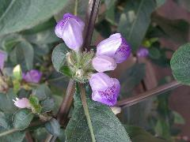

大安水簑衣
學名：Hygrophila pogonocalyx Hayata
科名：爵床科
別名：大安水蓑衣、竄心蛇、魚骨草、九節花、墨菜
原產地：台灣、中國大陸
特徵：
為多年生挺水型草本植物，莖直立，四方形，節間佈有絨毛，分枝多，老莖為紅褐色，葉紙質，為披針形，葉緣全緣，兩面長有粗短毛，花無柄，叢生在葉腋，花期為在9至隔年2月，花冠為唇形，紫色。
用途：
目前僅分布在台中縣大安、清水及龍井等臨海鄉鎮，生長於田圳、河溝及池沼邊緣等濕地，為瀕臨絕種的珍稀植物，需要加以保護。